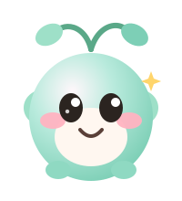

Skip to constellation

Qingqing
青青 · radiates news
Search stories
Home
Install
Refresh
Waking Qingqing…
0 sparks
Snapshot
Offline · saved sparks
Drag to wander · tap a moon or spark
Qingqing
gathering sparks
×